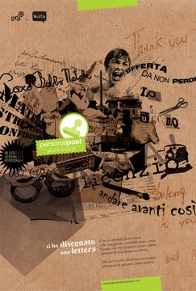
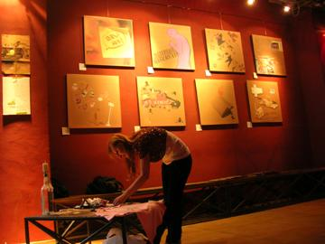
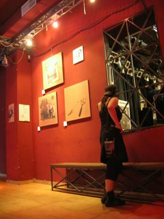
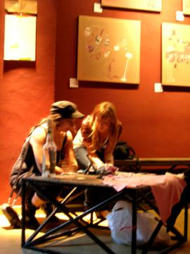
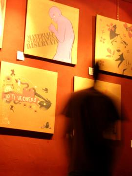
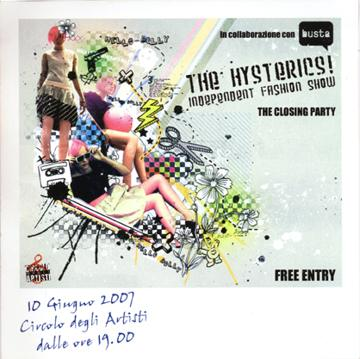

2007 · Principale · Personal Post
Personal Post
Lettere disegnate, in mostra al fashion show indipendente di The Histerics
Una lettera racchiude la forza di una comunicazione intima, ma a volte le immagini dicono meglio delle parole: perché non disegnarla invece di scriverla? Ogni artista ha disegnato un tipo di lettera, dalla lettera d’amore alla bolletta, dalla lettera a Babbo Natale a quella condominiale. Le opere sono state esposte al Circolo degli Artisti, durante il fashion show indipendente di The Histerics.
Opere 11


La serata 6 foto












Artisti 11
Chiara AttorredolceQFrancesco BellonFrancesco StefaniniGinevra Virgili · gin°Giulia OberholtzerMiriam Tognella · Disorder DesignRoberta Rizzi · RoRiSara MazzottiStefano Longo · thisisstupidValerio Spinelli